화학분석기사(구) (2012-03-04 기출문제)
1과목: 일반화학
1. 용액의 조성을 기술하는 방법에 대한 설명 중 틀린것은?
- 질량 퍼센트 - 용액 내에서 각 성분 물질의 질량 퍼센트로 정의한다.
- 몰농도 - 용액 1L 당 용질의 몰수로 정의한다.
- 몰랄농도 - 용매 1kg 당 용질의 몰수로 정의한다.
- 몰분율 - 혼합물에서 한 성분의 몰분율이란 그 성분의 몰수를 해당 성분을 제외한 나머지 성분 전체의 몰수로 나눈 것이다.
(정답률: 86%)

2. 화학적 평형상태의 기본적인 특성에 대한 설명 중 틀린 것은?
- 평형상태에서는 거시적 변화가 없다.
- 자발적인 과정을 통하여 평형상태에 도달한다.
- 평형상태에서는 정반응과 역반응이 모두 일어나지 않는 상태이다.
- 평형으로 접근하는 방향과 관계없이 최종적으로 같은 평형상태에 도달한다.
(정답률: 84%)
3. 다음의 구조식에 존재하는 작용기를 모두 옳게 나타낸 것은?
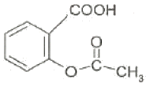
- 카르복실기, 아민기
- 카르복실기, 에스테르기
- 아민기, 에스테르기
- 아민기, 히드록시기
(정답률: 94%)
4. 주기율표상의 주족원소의 화학적 성질에 대한 설명중 틀린 것은?
- Ⅰ족인 알칼리 금속은 비교적 부드러운 금속으로 Li, Na, K, Rb, Cs 등이 포함된다.
- Ⅱ 족인 알칼리토금속에는 Be, Mg, Sr, Ba, Ra 등이 포함된다.
- Ⅵ 족인 칼코젠(Chalcogen)에는 O, S, Se, Te 등이 포함되며, 알칼리토금속과 2:1 화합물을 만든다.
- Ⅶ 족인 할로젠(Halogen)에는 F, Cl, Br, I가 포함되며, 물리적 상태는 서로 상당히 다르다.
(정답률: 85%)
5. 수소와 산소로부터 물을 만들 때, 충분한 산소가 공급된다고 가정하면, 14.4몰의 수소원자로부터 몇 몰의 물을 만들 수 있겠는가?
- 1.8몰
- 3.6몰
- 7.2몰
- 14.4몰
(정답률: 63%)
6. 다음 물질의 올바른 IUPAC 이름은?
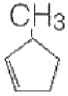
- 3-메틸사이클로펜텐
- 5-메틸-1-사이클로펜텐
- 3-메틸-시스-사이클로펜텐
- 1-메틸-2-사이클로펜텐
(정답률: 74%)
7. 40.9% C, 4.6% H, 54.5% O 의 질량백분율 조성을 가지는 화합물의 실험식에 가장 가까운 것은?
- CH2O
- C3H4O3
- C6H5O6
- C3H6O3
(정답률: 85%)
8. 산성비의 발생과 가장 관계가 없는 반응은?
- Ca2+(aq) + CO32-(aq) → CaCO3(s)
- S(s) + O2(g) → SO2(g)
- N2(g) +O2(g) → 2NO(g)
- SO3(g) + H2O(L) → H2SO4(aq)
(정답률: 87%)
9. 35℃에서 염화칼륨의 용해도는 40g이다. 만약 35℃에서 20g의 물 속에 KCl 이 5g 녹아있다면 이 용액은 어떤 상태인가?
- 불포화
- 포화
- 과포화
- 초임계
(정답률: 87%)
10. 주어진 온도에서 N2O4(g) ⇄ 2NO2(g)의 계가 평형상태에 있다. 이 때 계의 압력을 증가시키면 반응이 어떻게 진행되겠는가?
- 정반응과 역반응의 속도가 함께 빨라져서 변함없다.
- 평형이 깨어지므로 반응이 멈춘다.
- 정반응으로 진행된다.
- 역반응으로 진행된다.
(정답률: 85%)
11. 다음 단위체 중 첨가 중합체를 만드는 것은?
- C2H6
- C2H4
- HOCH2CH2OH
- HOCH2CH3
(정답률: 80%)
12. 어느 실험과정에서 한 학생이 실수로 0.20M NaCl 용액 250ml 를 만들었다. 그러나 실제 실험에 필요한 농도는 0.0⑤M 이었다. 0.20M NaCl 용액을 가지고 0.0⑤M NaCl 100mL를 만들려면, 100mL 부피 플라스크에 0.20M NaCl을 얼마나 넣어야 하는가?
- 2mL
- 2.5mL
- 4mL
- 5mL
(정답률: 82%)
13. 황의 산화수(Oxidation Number)가 틀린 것은?
- CaSO4 : +4
- SO32- : +4
- SO3 : +6
- SO2 : +4
(정답률: 86%)
14. 0.1M 질산 수용액의 pH 는 얼마인가?
- 0.1
- 1
- 2
- 3
(정답률: 92%)
15. 반쪽반응식을 이용하여 산화환원반응의 계수를 맞추는 방법에 대한 설명 중 틀린 것은?
- 산화 및 환원 반쪽반응의 원자량을 맞춘다.
- 산화와 환원은 반족반응을 모두 쓴다.
- 계수를 사용하여 각 반쪽반응에 원자의 개수를 맞춘다.
- 잃은 전자의 숫자와 얻은 전자의 숫자가 같도록 산화 및 환원 반쪽반응에 정수배한다.
(정답률: 73%)
16. 삼성분 이온화합물인 Cu(NO2)2 에 대한 명명이 가장 올바른 것은?
- 질산제일구리
- 아질산제일구일
- 질산제이구리
- 아질산제이구리
(정답률: 77%)
17. 어떤 미지의 물질이 물에는 쉽게 녹는데 벤젠에는 잘 안녹는다면 이 물질은 어떤 성질을 나타내는가?
- 극성도 아니고 비극성도 아니다.
- 극성이다.
- 극성이고 동시에 비극성이다.
- 비극성이다.
(정답률: 85%)
18. 0.4M황산용액 20.0mL 와 중화반응 하는데 이론적으로 필요한 0.1N 수산화나트륨 용액의 부피는 몇 ｍL인가?
- 80
- 160
- 320
- 40
(정답률: 64%)
19. 다음 산화환원 반응이 산성용액에서 일어난다고 가정할 때, (1), (2), (3), (4)에 알맞은 숫자를 순서대로 옳게 나열한 것은?
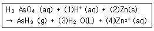
- 8, 16, 4, 16
- 8, 4, 4, 3
- 6, 3, 3, 3
- 8, 4, 4, 4
(정답률: 80%)
20. 다음 중 불포화 탄화수소에 속하지 않는 것은?
- alkane
- alkene
- alkyne
- arene
(정답률: 87%)
2과목: 분석화학
21. 다음과 같은 선표기법으로 나타내어진 전기화학전지에 관한 설명으로 틀린 것은?
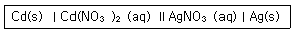
- 두 개의 염다리가 쓰였다.
- Cd(s)는 산화되었다.
- Ag+(aq)는 환원되었다.
- 이 전자에서는 전자는 Cd(s)로부터 나와서 Ag(s)로 이동한다.
(정답률: 89%)
22. 산해리 상수(acid dissociation constant)에 관한 설명으로 틀린 것은?
- HA ⇄ H++A-의 평형 상수에 해당한다.
- HA +H2O ⇄ H3O++A-의 평형 상수에 해당한다.
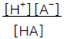
로 표현될 수 있다.- 산의 농도를 묽히면 산해리 상수는 작아진다.
(정답률: 77%)
23. 요오드화 반응에 대한 설명 중 틀린 것은?
- 요오드를 적정액으로 사용한다는 것은 I2에 과량의 I-가 첨가된 용액을 사용함을 의미한다.
- 요오드화 적정의 지시약으로 녹말지시약을 사용할 수 있다.
- 간접요오드 적정법에서는 환원성 분석물질을 미량의 I-에 가하여 요오드를 생성시킨 다음 이것을 적정한다.
- 환원성 분석물질이 요오드로 직접 측정되었을 때, 이 방법을 직접 요오드적정법이라 한다.
(정답률: 73%)
24. 다음 표의 지시약 중 약산 용약을 센 염기 용약으로 적정할 때, 적절한 지시약과 적정이 끝난 후 용액의 색깔을 옳게 나타낸 것은?
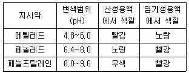
- 메틸레드, 빨강
- 메틸레드, 노랑
- 페놀프탈레인, 빨강
- 페놀레드, 빨강
(정답률: 78%)
25. 산염기 적정에서 사용하는 표준용액에 대한 설명으로 틀린 것은?
- 중화적정의 표준용액은 일반적으로 센산과 센 염기이다.
- 표준용액과 분석물질간의 반응은 화학양론적이어야 한다.
- 염기 표준용액으로 수산화나트륨, 수산화칼륨 등을 사용한다.
- 예리한 종말점을 얻기 위해서 표준용액의 반응은 느리게 진행되어야 한다.
(정답률: 84%)
26. 7.5 × 10-8m는 몇 nm 인가?
- 0.75
- 7.5
- 75
- 750
(정답률: 73%)
27. 다음 중 용매의 부피가 온도에 따라 변하기 때문에 그 값이 온도에 의존하는 것은?
- 몰 농도
- 몰 분율
- 몰랄 농도
- 질량 백분율
(정답률: 83%)
28. 전기화학반응에 대한 설명 중 틀린 것은?
- 환원반응이 일어나는 전극을 캐소드전극(cathode electrode)이라하며, 갈바니 전지에서는(-) 극이 된다.
- 염다리(salt bridge)에서는 전류가 이온의 이동에 의해서 흐르게 된다.
- 반쪽전지의 전위를 나타내는 값으로 표준환원전위를 사용하며, 표준수소전극의 전위 0.000V이다.
- 전극반응의 전압은 Nernst식으로 표시되며, 갈바니 전지에서는 표준환원전위가 큰 반쪽반응의 전극이 (+)극이 된다.
(정답률: 75%)
29. 압력의 단위 파스칼(Pa)를 SI 기본 단위로 옳게 나타낸 것은?
- kg/mㆍs2
- mㆍkg/s2
- kg/mㆍs
- m2ㆍkg/s2
(정답률: 82%)
30. pH 10.00인 50.00mL의 0.0400M Ca2+를 0.0800M EDTA로 적정하고자 한다. 6.00mL EDTA가 첨가되었을 때 남아 있는 Ca2+의 몰농도(M)는?
- 0.00271
- 0.0⑤42
- 0.0271
- 0.⑤42
(정답률: 55%)
31. 적정(titration)에 관한 설명 중 틀린 것은?
- 당량점(equivalence point)은 화학양론적으로 적정의 끝을 나타나는 지점으로 이론적인 값이다.
- 종말점(end point)은 지시약이 변색되는 것을 기준으로 나타나는 적정의 끝 지점이다.
- 약산 용액을 강염기 용액으로 적정할 때, 당량점에서 pH는 7보다 작다.
- 적정에서 순수하고 쉽게 변하지 않아서 그 양을 정확히 알고 있는 물질을 일차표준물질(primarystandard)라고 한다.
(정답률: 82%)
32. 염(salt) 용액에서 활동도(activity)의 설명으로 옳은 것은?
- 이온의 활동도는 활동도계수의 제곱에 반비례한다.
- 이온의 활동도는 활동도계수에 비례한다.
- 이온의 활동도는 활동도계수에 반비례한다.
- 이온의 활동도는 활동도계수의 제곱에 비례한다.
(정답률: 77%)
33. 강산이나 강염기로만 되어 있는 것은?
- HCl, HNO3, NH3
- CH3COOH, HF, KOH
- H2SO4, HCl, KOH
- CH3COOH, NH3,, HF
(정답률: 87%)
34. 구리이온을 전기석출하기 위하여 0.800A를 15.2분동안 유지하였다. 음극에서 석출된 구리의 질량과 양극에서 발생한 산소의 질량은? (단, 구리 원자량은 63.5g, 산소 원자량은 16.0g이다.)
- 구리(Cu)질량 = 2.40g, 산소(O2)질량=0.06⑤g
- 구리(Cu)질량 = 2.40g, 산소(O2)질량=0.6⑤g
- 구리(Cu)질량 = 0.240g, 산소(O2)질량=0.6⑤g
- 구리(Cu)질량 = 0.240g, 산소(O2)질량=0.06⑤g
(정답률: 54%)
35. EDTA를 활용한 적정법 중에서 충분한 양의 EDTA를 분석용액에 가한 뒤 과량의 EDTA를 제2의 금속 이온 표준용액으로 적정하는 방법은?
- 직접적정
- 역적정
- 치환적정
- 간접적정
(정답률: 85%)
36. 산화-환원 적정법에서 과망간산염을 이용할 때 종말점의 색에 가장 가까운 것은?
- 분홍색
- 연청색
- 흑색
- 백색
(정답률: 78%)
37. 킬레이트 적정에 대한 설명으로 옳은 것만 나열한 것은?
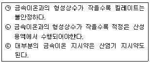
- ㉠
- ㉡, ㉢
- ㉠, ㉢
- ㉠, ㉡, ㉢
(정답률: 64%)
38. 25℃에서 아연(Zn)의 표준전극전위는 다음과 같다. 0.0600 M Zn(NO3)2 용액에 담겨있는 아연 전극의 전위는?
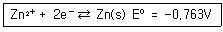
- -0.763V
- -0.799V
- -0.835V
- -0.846V
(정답률: 71%)
39. EDTA 적정 시 pH가 높은 경우에는 EDTA를 넣기전에 수산화물인 M(OH)n 의 침전물이 형성되는 경우가 있으며 이런 경우에는 많은 오차가 발생한다. 다음 중 이를 방지하기 위한 가장 적절한 방법은?
- 암모니아 완충용액을 가한다.
- pH를 낮춘다.
- 적정 전에 용액을 끓인다.
- 침전물이 생기면 거른 후 적정한다.
(정답률: 83%)
40. 염화나트륨 과포하 용액에 용질로 사용한 염화나트륨을 약간 더 넣어주거나 염화나트륨 과포화용액을 잘 저어주면 그 용액은 어떻게 되는가?
- 염화나트륨 과포화 용액 그대로 있다.
- 염화나트륨 포화 용액이 된다.
- 염화나트륨 불포화 용액이 된다.
- 용매가 증발하여 감소한다.
(정답률: 78%)
3과목: 기기분석I
41. 1H NMR 흡수는 분자의 자기 비등방성 효과에 의하여 화학적 이동 값이 다양하게 변한다. 다음 화합물 중 가장 높은 자기장에서 흡수 봉우리를 나타내는 것은?
- 에탄
- 에틸렌
- 아세틸렌
- 벤젠
(정답률: 42%)
42. 분석기기에서 발생하는 잡음 중 열적잡음(thermal noise)에 대한 설명으로 틀린 것은?
- 온도가 올라가면 증가한다.
- 저항이 커지면 증가한다.
- 백색 잡음(white noise)이라고도 한다.
- 주파수를 낮추면 감소한다.
(정답률: 84%)
43. UV-VIS 흡수 분광법에서 Beer-Lambert 법칙에 대한 설명으로 옳지 않은 것은?
- 흡광도는 단위가 없다.
- Beer-Lambert 법칙은 분석 성분의 농도가 0.01mol/L 이하의 낮은 농도에서 잘 성립한다.
- Beer-Lambert 법칙에서 몰흡광계수의 값이 클수록 분석 성분의 높은 농도까지 분석이 가능하다.
- Beer법칙은 흡광도는 농도에 비례함을 나타내고, Lambert법칙은 흡광도는 셀의 길이에 비례함에 기초를 둔 법칙이다.
(정답률: 69%)
44. 원자 흡수분광법에서 화학적 방해시 방해물질과 우선적으로 반응하여 분석물질과 작용하는 것을 막을 수 있는 시약을 무엇이라고 하는가?
- 해방제
- 보호제
- 착화제
- 산화제
(정답률: 74%)
45. 원자흡수 분광분석 방법에서 가장 중요한 것은 광원이다. 버너에서 발생된 불꽃의 높이에 따라서, 측정하고자 하는 원소들의 형태에 대한 다음 설명 중 틀린것은?
- Cr은 측정 높이가 낮은 곳에서 최적화된다.
- Ag는 측정높이가 높을수록 흡광도가 증가한다.
- Mg는 쉽게 이온하되므로 Cr보다 낮은 높이에서 최적화될 것이다.
- 불꽃의 온도에 따라 원소들의 최대 흡광도가 다르므로, 측정원를 바꿀 때 마다 측정높이를 조절한다.
(정답률: 56%)
46. 나트륨 원자와 마그네슘(Ⅰ) 이온, 마그네슘 원자의 에너지 준위도표에 대한 설명으로 옳은 것은?
- 나트륨 원자와 마그네슘(Ⅰ) 이온의 에너지 준위도표의 전반적인 모양은 비슷하다.
- 나트륨 원자와 마그네슘(Ⅰ) 이온의 각 에너지 준위 간 에너지 크기는 비슷하다.
- 단위를 전자볼트(eV)로 하였을 때, 마그네슘 원자의 에너지 준위의 세로축 범위(scale)는 약 70eV이다.
- 마그네슘(Ⅰ) 이온과 마그네슘 원자의 에너지 준위 도표에서는 삼중항(triplet)이 나타난다.
(정답률: 48%)
47. 다음 중 가장 작은 접두어는?
- yocto
- atto
- pico
- hecto
(정답률: 75%)
48. 다음 중 원자 방출분광법의 광원이 아닌 것은?
- 유도쌍 플라스마
- X-선 플라스마
- 직류 플라스마
- 마이크로파 유도 플라스마
(정답률: 65%)
49. 분자의 전자에너지 준위는 σ, π, n, π*, σ*로 나타낼 수 있다. 이들 간의 전이에서 가장 에너지가 작은 광선으로도 가능한 것은?
- π → π*
- n → π*
- σ → σ*
- n → σ*
(정답률: 61%)
50. 기기 잡음을 줄이는 하드웨어적인 방법 중 신호대 잡음비가 1 보다 작은 신호를 회수하는 데 가장 적당한 것은?
- 변조(modulation)
- 아날로그 필터(analog filter)
- 토막틀 증폭기(chopper amplifier)
- 맞물린 증폭기(lock-in amplifier)
(정답률: 57%)
51. 13C NMR의 장점이 아닌 것은?
- 분자의 골격에 대한 정보를 제공한다.
- 봉우리의 겹침이 적다.
- 탄소 간 동종 핵의 스핀-스핀 짝지움이 일어나지 않는다.
- 스핀-격자 이완시간이 길다.
(정답률: 60%)
52. 들뜬 분자가 바닥상태로 되돌아가는 데는 여러 가지 복잡한 단계들을 거친다. 이러한 과정들 중에서 전자의 스핀이 반대 방향으로 되어 분자의 다중도가 변화는 과정을 무엇이라 하는가?
- 계간전이
- 외부전환
- 내부전환
- 진동이완
(정답률: 73%)
53. X-선 흡수 분광법과 밀접한 관련이 있는 것은?
- 내부 전자
- 결합 전자
- 분자의 회전/진동
- 자기장 내에서 핵스핀
(정답률: 76%)
54. X선 형광법(XRF)에 대한 설명으로 틀린 것은?
- 실험과정이 빠르고 편리하다.
- 원자번호가 작은 가벼운 원소 측정에 편리하다.
- 비파괴 분석법이어서 시료에 손상을 주지 않는다.
- 스펙트럼이 비교적 단순하여 스펙트럼선 방해 가능성이 적다.
(정답률: 78%)
55. 다음 중 적외선 흡수 스펙트럼이 관찰되지 않는 분자는?
- H2O
- CO2
- N2
- HCl
(정답률: 75%)
56. 빛의 흡수와 발광(luminescence)을 측정하는 장치에서 두드러진 차이를 보이는 분광기 부품은?
- 광원
- 단색화 장치
- 시료 용기
- 검출기
(정답률: 77%)
57. 분석정보를 전기적 양으로 코드화하는 방식은 여러 가지가 있다. 그 중 아날로그 영역에서 정보를 코드화하는 방법이 아닌 것은?
- 전자양의 크기
- 전압의 크기
- 전류량의 크기
- 전력의 크기
(정답률: 66%)
58. 다음 측정법 중 장치가 고가임에도 불구하고 램프가 필요없고 바탕 신호와 간섭이 적으며 아주 높은 감도를 지닌 특성을 고루 지닌 측정법은?
- 불꽃 원자 흡수법
- 전열 원자 흡수법
- 플라스마 방출법
- 유도쌍 플라스마-질량분석법
(정답률: 79%)
59. 방향족 탄화수소의 혼합물이 σ-크실렌, m-크실렌, p-크실렌 및 에틸벤전 혼합물의 정량분석에 가장 적합한 분광기기는?
- 가시광분광기
- 적외선분광기
- Raman분광기
- 핵자기공명분광기
(정답률: 58%)
60. 아세트산(CH3COOH)의 기준진동방식의 수는?
- 16개
- 17개
- 18개
- 19개
(정답률: 72%)
4과목: 기기분석II
61. 얇은 층 크로마토그래피(TLC)에 대한 설명 중 옳지 않은 것은?
- TLC의 층 분리는 미세한 입자의 얇고 접착성 층으로 입혀진 유리판 위에서 주로 이루어진다.
- TLC판에 전개된 점적(spot)의 면적을 기준물질의 그것과 비교하여 정량한다.
- TLC판에 전개된 점적(spot)을 오려내어 질량을 측정하여 정량한다.
- TLC판에 전개된 점적(spot)을 오려내어 고정상에 흡착된 시료를 추출하고 다른 적당한 방법으로 정량한다.
(정답률: 72%)
62. 다음 [그래프]는 1.0M KNO3와 6.0mM의 K3Fe(CN)6가 녹아 있는 용액에 백금 전극을 이용하여 얻은 순환전압전류곡선이다. b 지점에서 일어나는 전기화학 반응은?
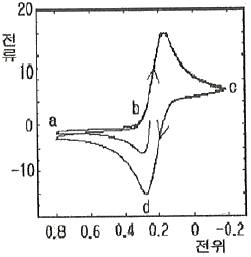
- Fe2+ ⇌ Fe4+ + e2-
- Fe(CN)64- ⇌ Fe(CN)62- +e2-
- Fe3+ + e- ⇌ Fe2+
- Fe(CN)63- + e- ⇌ Fe(CN)64-
(정답률: 62%)
63. 질량분석법의 특징에 대한 설명으로 틀린 것은?
- 다른 분석법에 비하여 감도가 높다.
- 미지물을 확인하거나 특정화합물의 존재를 확인하는데 유용하다.
- 분석에 필요한 시료량이 mg에서 g 수준으로 비교적 많이 요구된다.
- 반응기구 조사와 추적자연구에 동위원소 사용이 가능하다.
(정답률: 64%)
64. 다음 [그림]은 퓨리에 변환(Fourier Transformed) 질량분석기를 이용하여 얻은 Cl3C-CH3Cl (1,1,1,2-사염화에탄)의 스펙트럼이다. 각 스펙트럼의 X-축을 주파수와 질량으로 나타내었다. 여기서 131질량 피크는 35Cl3CCH2 이온 때문에, 133피크는 Cl37Cl235CCH2 이온 때문에 나타난다. 스펙트럼에 대한 설명 중 틀린 것은? (단, 동위원소 존재비는 Cl35 : Cl37 = 100:33, C12: C13 = 100:1.1, H1:H2 = 100: 0.02 이다.)
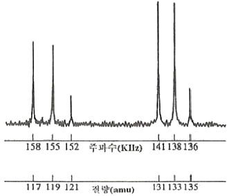
- 135amu 피크는 Cl33Cl275C13C13H21 이온 때문에 나타난다.
- 117amu 피크는 Cl335C 이온 때문에 나타난다.
- 119amu 피크는 Cl37Cl235C 이온 때문에 나타난다.
- 121amu 피크는 Cl237Cl35C 이온 때문에 나타난다.
(정답률: 73%)
65. 다음 분자질량법의 이온화 방법 중 스펙트럼이 가장 복잡한 것은?
- 전자 충격 이온화(electron impact ionization)
- 화학적 이온화(chemical ionization)
- 장 이온화(field ionization)
- 장 탈착 이온화(field desorption ionization)
(정답률: 70%)
66. 크로마토그래피에서 컬럼의 효율에 영향을 미치는 요소로 볼 수 없는 것은?
- 소용돌이 확산(eddy diffusion)
- 가로 확산(transverse diffusion)
- 이동상 속도(mobile phase velocity)
- 질량이동속도(mass transfer rate)
(정답률: 71%)
67. 고성능 액체크로마토그래피(HPLC)의 용매 중 용해기체에 관한 설명으로 옳은 것은?
- 띠넓힘을 발생시킨다.
- 컬럼을 쉽게 손상시킨다.
- 용해되어 있는 산소가 펌프를 부식시킨다.
- 용해도가 낮은 질소를 불어넣어 제거할 수 있다.
(정답률: 56%)
68. 크로마토그래피에서 봉우리의 띠넓힘을 줄이는 방법으로 가장 적합한 것은?
- 지름이 큰 충진관을 사용한다.
- 이동상인 액체의 온도를 높인다.
- 고체 충진제의 입자 크기를 크게 한다.
- 액체 정지상의 막두께를 줄인다.
(정답률: 67%)
69. 전압전류법에서 두 전위 사이를 순환시키는데 처음에는 최고 전위까지 선형적으로 증가시키고 다음에는 같은 기울기로 선형적으로 감소시켜 처음 전위로 되돌아오게 하였을 때 나타나는 들뜸 전위신호는?
- 직선주사
- 제곱파
- 삼각파
- 시차펄스
(정답률: 74%)
70. 열분석법에 대한 설명 중 옳지 않은 것은?
- 열적정법에서는 용액의 온도를 변화시키면서 필요한 적정액의 부피를 측정한다.
- 열무게법(thermogravimetry)에서는 시료의 온도를 증가시키면서 질량변화를 측정한다.
- 시차 열법분석(differential thermal analysis)에서는 시료와 기준물질 사이의 온도 차이를 온도의 함수로서 측정한다.
- 시차주사 열량법(differential scanning calorimetry)에서는 온도를 변화시킬 때, 시료와 기준물질 사이의 온도를 동일하게 유지시키는데 필요한 열입력을 측정한다.
(정답률: 40%)
71. 폴라로그래피법에 대한 설명으로 틀린 것은?
- 최초로 발견되고 이용된 전기량법이다.
- 대류가 일어나지 않게 한다.
- 작업전극으로 적하수은전극을 사용한다.
- 폴라로그래피의 한계전류는 확산에 의해서만 나타난다.
(정답률: 56%)
72. 역상분리를 하였을 때 다음 물질들의 용리순서를 예측하면?
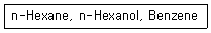
- Benzene → n-Hexanol → n-Hexane
- n-Hexane → Benzene → n-Hexanol
- n-Hexane → n-Hexanol → Benzene
- n-Hexanol → Benzene → n-Hexane
(정답률: 72%)
73. 유리전극으로 pH를 측정할 때 알칼리 오차의 원인은 무엇인가?
- pH 11~12 보다 큰 용액 중에서 알칼리 금속이온에 감응하기 때문에
- pH를 측정할 때 생기는 근본적인 불확정성 때문에
- 완충용액의 불확정성 때문에
- 유기성분에 박테리아가 작용하기 때문에
(정답률: 69%)
74. 기체 크로마토그래피에서 비교적 낮은 농도의 할로겐을 함유하고 있는 분자와 콘쥬게이션된 C=O 기를 가진 화합물의 검출에 가장 적합한 검출기는?
- 열전도도 검출기
- 불꽃이온화 검출기
- 전자포획 검출기
- 불꽃광도법 검출기
(정답률: 76%)
75. 전해전지를 이용하여 환원전극에서 Cu를 석출하고자 한다. 2A의 전류가 48.25분 동안 흘렀을 때 석출된 Cu(63.5g/mol)는 몇 g 인가? (단. Faraday 상수[F]는 96,500C/molㆍe- 이다.)
- 0.952g
- 1.9⑤g
- 3.810g
- 5.715g
(정답률: 62%)
76. 30cm의 컬럼을 이용하여 물질 A와 B를 분리할 때 머무름 시간이 각각 16.40분과 17.63분, A와 B의 봉우리 밑 나비는 1.11분과 1.21분이었다. 컬럼의 성능을 나타내는 컬럼의 평균단수(N)과 단높이(H)는 각각 얼마인가?
- N = 3.44 × 103, H = 8.7 × 10-3cm
- N = 1.72 × 103, H = 8.7 × 10-3cm
- N = 3.44 × 103, H = 19.4 × 10-3cm
- N = 1.72 × 103, H = 19.4 × 10-3cm
(정답률: 60%)
77. 칼로멜 전극에 대한 설명으로 틀린 것은?
- 염화수은으로 포화되어 있고 염화칼륨 용액에 수은 을 넣어 만든다.
- 반쪽전지의 전위는 염화칼륨의 농도에 따라 변한다.
- 포하 칼로멜 전극의 전위는 온도에 따라 변한다.
- 염화칼륨과 칼로멜의 용해도가 평형에 도달하는데 짧은 시간이 걸린다.
(정답률: 48%)
78. 적하수은전극에 대한 설명으로 맞는 것은?
- 수은방울 생성이 빠를 경우 전극 표면의 재현성이 좋지 않다.
- 수소이온의 환원에 대한 과전압이 크다.
- 비패러데이 잔류전류가 생기지 않는다.
- 전극의 전류극대 현상을 막기 위해서 EDTA를 사용한다.
(정답률: 51%)
79. 질량분석기의 이온화장치(ionization source)중 시료 분자 및 이온의 부서짐 및 토막내기(fragmentation)가 가장 많이 일어나는 것은?
- 전자충격 이온화(electron impact)
- 기질 보조 레이저 탈착 이온화(matrix-assisted laser desorption ionization)
- 장 이온화(field ionization)
- 화학 이온화(chemical ionization)
(정답률: 85%)
80. 전압전류법(voltammetry)에 대한 설명으로 틀린것은?
- 폴라로그래피는 적하수은 전극을 이용하는 전압전류법이다.
- 벗김분석은 가장 민감한 전압전류법인데 그 이유는 분석물질이 농축되기 때문이다.
- 측정하고자 하는 전류는 패러데이 전류이고, 충전전류는 패러데이 전류를 생성시키게 하므로 최대화하여야 한다.
- 반파전위는 정성분석을 확산전류는 정량분석이 가능하게 한다.
(정답률: 66%)
몰분율은 혼합물에서 한 성분의 몰수를 해당 성분을 제외한 나머지 성분 전체의 몰수로 나눈 것으로 정의된다. 이는 해당 성분이 전체 용액 중 차지하는 비율을 나타내는 것이다.
질량 퍼센트는 용액 내에서 각 성분 물질의 질량 퍼센트로 정의된다. 이는 해당 성분이 전체 용액 중 차지하는 질량 비율을 나타내는 것이다.
몰농도는 용액 1L 당 용질의 몰수로 정의된다. 이는 용액 내에 있는 용질의 농도를 나타내는 것이다.
몰랄농도는 용매 1kg 당 용질의 몰수로 정의된다. 이는 용매 내에 있는 용질의 농도를 나타내는 것이다.